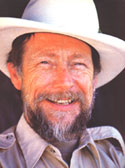

Choosing Your Place-and Making a Stand!
Gary Snyder is no stranger to longtime readers of THE Mother Earth News°. In fact, his ecological broadside "Four Changes" actually opened MOTHER N0. 1! In later years, a quote from Gary's work graced our Let the Men & Women of Wisdom Speak in our tenth anniversary issue (No. 60), and one of his poems helped kick off our Fieldbook feature in No. 86.
Born in San Francisco on May 8, 1930, Snyder first came to national attention, ironically enough, as the model for the hero of another writer's book-the character Faphy Ryder in lack Kerouac's novel The Dharma Bums (1958). His own major publications were soon to follow, though, beginning with Riprap (1959), reaching a peak of sorts with the Pulitzer Prize-winning Turtle Island (which took its name from a Native American term for North America and was published in 1974), and culminatingfor the present, anyway-with Axe Handles, which was released by North Point Press early this year. (Ordering information for this fine collection of poems follows the interview.)
Through much of his work, Gary has functioned as a strong voice for the planet and-perhaps even more significant for the creatures of this earth that lack the means of representing themselves in the chambers of human politics. And in recent years his expression of such concerns has often been in the form of comments relating to a somewhat confusing-on the surface, at least-concept called bioregionalism.
To find out more about this movement (if, indeed, movement is even an appropriate term), MOTHER staffers Bruce Woods and Dave Schoonmaker met with Gary at the headquarters of his Berkeley publisher. In the following interview-excerpted from their discussions-you'll learn that bioregionalism can be as complex as the laying of a groundwork for a new "Green politics" for the United States, a movement that aims to rethink all of our arbitrary political boundaries, or as simple as the urgent message that it's time for all of us to discover where we are and to take responsibility for the soil, water, plants, birds, and beasts that share our locale. It's a sure bet that all aspects and interpretations of the bioregional concept won't appeal to every reader of this magazine, but it's just as likely that some aspect of what Gary Snyder has to say will touch each and every one of us.
PLOWBOY: Gary, you were among the first contemporary North American poets to address the problems of caring for the earth and the living creatures that share the planet with us. Can you tell me how your background, place of origin, and education may have pushed you in that direction?
SNYDER: I suppose that my concern is due, at least in part, to growing up in the Pacific Northwest, north of Seattle, in a rural environment. I was surrounded by the second-growth forests-maybe third-growth forests-on the hills back of my father's little stump farm/dairy farm, and the distant, but not too distant, views of the Cascade Mountains, Mount Rainier and Mount
Baker, and the whole range of peaks to the east ...as well as the white, snowy ranges of the Olympic Mountains across Puget Sound to the west. That was the world I grew up in, and I found it exciting and beautiful and wanted to explore it.
However, exactly why I should have focused more on learning about the natural world than did a lot of other kids I knew, is, I suppose, just some kind of karma.
Part of my youthful interest in nature was just due to one of those imponderable aspects of a person's makeup ...and another part of it was a result of the opportunities given to me by the region in which I grew up. At any rate, I took advantage of the area around me and ventured into it on my own. I started learning, as-best I could, what was there in the way of plants and birds, and went out and explored the area ...staying overnight on my own sometimes in a little secret camp, cooking for myself, and so forth. And I moved gradually from that into taking longer and longer trips into the Cascades and into the Olympics. By the time I was 15, I was beginning to do mountaineering and continued to do more climbing through adolescence. I climbed all of the big snow peaks of the West-St. Helens at 15, Hood and Adams at 16, Rainier and Baker and Stuart at 17, and so forth.
I also became aware of the presence of the Northwest Coast Indians, seeing them here and there around the area ...down by the beach, in the public market. The Salish Indians even used to come by the house, selling smoked salmon.
At any rate, I put a few things together when I was still in my early teens, and it occurred to me that these were the people who had always been here. And that these would be the real teachers, if I truly wanted to learn about the place, because they were the actual residents. I mean, you can find a certain amount of information in a bird book or a flower book, but then there's another level of understanding that goes much deeper than that: one that comes from real acquaintance.
I also tried my hand at a few of their skills and crafts and did a little leather tanning, made moccasins, and made my own tools. In short, I struggled with self-sufficiency ...and subsistence.
PLOWBOY: Using the natural materials that were available ...
SNYDER: Yes, and these interests and activities led me toward anthropology and American Indian studies when I got into college.
"...if we had political boundaries more appropriate to the regions in which we live-following watersheds or mountain ranges, following plant zones and soil types-that would be a step in the right direction, both ocially and ecologically ..."
PLOWBOY: That was at Reed College, in Portland, right? SNYDER: Yes. While I was there, I combined anthropology with the stud of literature and ended up concentrating on oral literature and mythology. I was fascinated by all of the problems associated with the stylistics of oral literature and by the question of what is implied for us, internationally and culturally, by the presence of mythology and folk tales, worldwide, that have similar motifs and themes. That made a profound impression on me and pushed me in the direction of poetry. Then another factor began to influence my intellectual development: the study of China.
PLOWBOY: How did you become interested in that?
SNYDER: Well, first by picking up Ezra Pound's translations of Chinese poetry. And then, later, by reading Arthur Waley's translation of the Tao Te Ching and his many translations of poetry. I was amazed to discover that China had a high civilization, with centuries of literacy, which has a different view of nature than that commonly held in the West.
Essentially, I came to realize, there are at least three ways of looking at things: the primitive or indigenous ways of seeing the world ...the Occidental civilized way ...and the Far Eastern civilized way. There are three or more positions, rather than just the civilized and the uncivilized.
The indigenous or "old ways" philosophy assumes an implicit oneness and kinship with the whole of nature and sees nature as process, rather than as a collection of commodities. It believes in a nonlinear, nonsequential causation that links apparently disparate events: "I didn't get an elk this week because I spoke rudely last month." It has no fear of wild nature and hence no thought of taming it.
The Far Eastern view (and here I'm skipping the Middle East and India, which I see more as mystical subsets of the Occident) is both secular and animistic. It sees all nature as a process (Taoism) into which a complex civilization can fit if it practices proper etiquette on a massive scale (Confucianism). The Occident had similar prehistoric roots but developed a more intense urbanism, theism, and thirst for expansion of power that lead to mind/matter dualism and to the elevation of humankind to a totally different category outside of nature.
PLOWBOY: Would you say that there is also a difference between the nativeEuropean Occidental view and the American Occidental view, since most of us are essentially foreigners here?
SNYDER: Well, you could say that, but the dynamics of American culture are still, I think, pretty much European. All the tricks and games we've played were first figured out in Europe. We iust had a new continent upon which to employ them.
PLOWBOY: With more raw material. . .
SNYDER: Right. Tocqueville talks about that, and does so eloquently, n: his description of the United States. In short, the primary mind-set that our ancestors brought from Europe has not yet been broken. It's that Cartesian dualism-of consciousness and nature, of body and spirit, and of subject and object-that causes our whole culture to still see this huge continent as essentially a yard full of resources to be used for whatever purposes we can comc up with.
We suffer from a lack of sense of nativeness ...a lack of commitment to spending time in place, to the building of a culture over the centuries. These concepts haven't occurred yet to most Americans.
PLOWBOY: We're still acting as if we were invaders rather than true residents
SNYDER: Right. And, unfortunately, even the Europeans-on their own an cestral ground-often act the same way. Or the Japanese, too, as they go about radically altering and reshaping their environment for the sake of their current self defined industrial needs, with very little thought for long-range sustainability. They're playing the game to the hilt for this century and hoping that somehow things will come out OK later.
These are huge gambles-huge gambles-that these people are taking, However, the Japanese are hedging their bets a little bit. One of the ways they do this is by maintaining a highly subsidized rice agriculture. Farmer on the northern coast, on the coast of the Japan Sea (which is the richest rice-growing territory in all of Japan), are subsidized to keep raising rice, even though that production involves a loss to the economy as a whole.
PLOWBOY: We don't seem to be doing anything similar to that here.
SNYDER: But we are, to a degree. We are subsidizing a lot of agriculture Of course, we don't do it so much with the thought of simply keeping the skills alive. Rather, it's done in response to the demands of powerful political lobbies.
PLOWBOY: And I gather that the subsidized Japanese rice farmers ircr,': mining the soil to the extent that most of our subsidized agriculture is.
SNYDER: No. The indigenous rice culture is an agriculture that has prop c n itself sustainable through the centuries. Of course, the Japanese have employed a lot of herbicides and pesticides and petroleum fertilizer in rice farming it-, recent decades. But they still know how to do without them.
PLOWBOY: These sorts of problems continue to evolve. Would you say that your ideas on the most effective courses of action toward environmental concernsecological concerns-have evolved over the years?
SNYDER: Well, they haven't changed in major degrees, but they have steered. you could say, by the wind. I'm always looking for the most intelligent, the clearest angle of approach. I'm not locked into a course of action or a point of view. In short, I'm trying to keep learning about the ways in which wt: look at these questions and trying to understand what the dynamics of the current industrial world culture and its self destructiveness are. It's a huge undertaking to try to figure out how it all works: One can only see a little of this elephant.
Over the years I've kept applying myself to the study of history and economics, just trying to understand how it is that these few little European nations spread over the world so rapidly. And, while doing so, I've tried not to be too judgmental. It's not exactly as though we were dealing with the force of evil against the forces of good. It's rather more complex.
We have to understand how these huge economic and political systems work and how to turn their energy-which is a real and potentially useful energyin more healthful directions whenever we can and wherever we can ...which. maybe, is a point of view that-at least for some people-takes too much patience. And maybe we don't always have time for it. But it's certain that our effectiveness would improve with a better understanding of all these force; ...whenever we can get it.
To go back just a little bit, I'd like to say that although it's true that I was among the first writers in recent decades to focus on nature and the " wild mind," I'm not the first, by any means. People who were very important in helping me shape my ideas include Kenneth Rexroth, who was writing very clearly on these issues, in the late 30's ...Michael McClure, who started speaking and writing along the same lines just about the same time I did ...Robert Duncan, in his own way, tangentially touching on these questions ...and Robinson Jeffers, who made clear statements from early on.
Then again, beautiful, precise, intuitive perspectives can be seen in the nature poems of D.H. Lawrence ...and Lawrence's essays on American literature are profound; his insights into its problems and psychology are extraordinary.
So the work actually has been there all along. And prior to my work, and the work of the other poets that I've mentioned, were the long-held concerns of people like John Muir. He inspired a couple of generations of conservationists, many of whom were very fine writers. Aldo Leopold, for example.
In fact, we have a real history and tradition of work in the field by all sorts of cranky, intelligent, and often very wild people ...all the way from the last century till now.
Most poets got into the game a little bit later, but the concern has been there all along. You can even find nineteenth-century precedents for it. Of course, all of us in a way go back to Thoreau ...and that trail leads back into Europe, to the writings of anarchists and of people in the heretical independent Christian movements, among others.
PLOWBOY: Isn't it true that the environmental crisis itself has escalated so much in the last few decades that it's caught more attention from the public?
SNYDER: Yes, but the direction in which the world was going was recognized a long time ago. Rousseau comments on it ...Edmund Burke ...Tocqueville comments on it specifically in terms of what was then happening in America. There have always been some eyes that saw, with horror and amazement, where the logic of unbridled materialism and the dualistic worldview and the lure of endlessly available resources would lead ...when tied to a kind of deified notion of the free-market economy.
PLOWBOY: The bioregional movement is a more recently emerging environmental cause and one that you've championed lately. Could you define this term for us?
SNYDER: OK, but first I have to admit that I don't know where the term bioregionalism first came from. I do know, however, that it has some old and interesting predecessors that are by no means necessarily environmentally oriented. Part of the history of the emergence of bioregionalism must, I think, have to do with the completely natural-and to be expected-resistance of local economies and local cultures to being colonized by, and swept away by, urban cultural centers. The movement probably has its origins in the gradual expansion of the power of the city, or of the metropole, in European culture-at the expense of sustainable local, small cultures. And these local cultures, which usually have their own languages or dialects and their own traditions, have always resisted being swept into somebody else's urbanized mainstream in which they would come out second, both economically and culturally ...they would be second-class citizens.
It's all part of the rise of the centralized state. Without even knowing quite why they must, except out of a spirit of sheer survival, small cultures like the Cornish, like the Bretons, like the Welsh, like the Irish, like the Scotsjust to give a few examples in Western Europe-have tried to hang on through the centuries by the skin of their teeth, tried to maintain some of their own identity.
These peoples are not only arguing for cultural authenticity and the right to existwhich is certainly a right-but also for the maintenance of the skills and practices that belong with local economies and that enable them to operate in a sustainable manner, via their own specialized, local knowledges, over the centuries.
From one angle, then, bioregionalism stands for the decentralization of, the critique of, the state. In part, it draws on the history of anarchist thought: the line of thought that argues that we do not need a state, and that the state or government is not necessarily synonymous with the social order and organization inherent in society. By anarchism I mean a nonviolent political philosophy that finds order in the possibilities of a free society, and not in the imposed order of a state structure operating with a monopoly on violence from above. That's what I mean by anarchism, not the work of wild-eyed bomb throwers (to clear up that misapprehension). So North American bioregionalism is an extension of anarchist thought, combined with much appreciation of American Indian culture areas, the recognition of the virtues of decentralization, and the insights of "field ecology."
With that in mind, we look at the web of political boundaries thrown on this continent by the rapid history of American expansion. Bioregionalists see them as poorly drawn, as inappropriate. Environmental concerns then begin to enter the bioregional perspective, saying, in effect, that if we had political boundaries more appropriate to the regions in which we live-followin'g watersheds or mountain ranges, following plant zones and soil types-that would be a step in the right direction, both socially and ecologically, in that it would enable us to tune our local societies more precisely to the natural resources that are already in place, and to form our human communities and associations more appropriately to the natural communities. It's a step toward actually asserting the unity of the tree and bird communities with the human. We all share the same natural boundaries, you see.
PLOWBOY: And that demands our taking responsibility for our km n area.
SNYDER: And that means all species taking responsibility together.
PLOWBOY: Right.
SNYDER: To give you an example of artificial versus natural boundaries. there are the political borders of the states of California, Washington, and Oregon, say. In that same region, though, there are also-among others-the natural boundaries established by the range of Douglas fir. This type of tree grows from somewhere just around Haines, Alaska, down the coast and along the crest of the Cascades and the Sierra as far as Big Sur ...and extend east to the crest of the Sierra Nevada. It's found around where I live, but not over on the other side into the Great Basin.
From Big Sur north to Haines, and from the crest of the Sierra and the Cascades to the Pacific Ocean ...the range of Douglas fir is almost exactly precise definition of what my natural nation would be. The agriculture and forestry of the region within which Douglas fir grows are defined by the amount of rainfall and the temperatures found in that zone. South of the Douglas fir range you find a really hot and much drier, truly Mediterranean cli mate, which has different agricultural needs. And so you could take, say, the Douglas fir-because it's dependent upon that rainfall and those temperatures-as the signature of this natural nation. And what we already know about Douglas fir tells us nearly everything else about the locale ...including what kind of farming we should do, what kind of raincoats we should wear, what boots will be the best to wear, and even what our poetry should be like. [Laughter] That's the way those things work, you know.
I felt this on my last trip up to Alaska, when I drove from Anchorage up around the basin of the Copper River and over into Canada and came down through the Yukon. I turned off at Haines Junctioh and went over Haines Summit-all of that being white spruce taiga, still frozen in-and dropped down then to the Pacific, to Haines, Alaska, which is on the water. And suddenly I was in the green trees, the skunk cabbage was beginning to come out, the eagles had already left ...and it was spring, where 40 miles back up the road up in the taiga I'd been in the winter of the Yukon. I knew I was back in my country, seeing Douglas fir. All of the terms suddenly changed. The plants became plants I know.
That's a bioregional boundary. I could feel it. And if you look at the maps in Kroeber's book Cultural and Natural Areas of Native North America, you'll find (this is exactly what he does in that book, using a series of overlay maps), that the natural regions of North America and its native cultural regions are almost identical.
So in a sustainable society-one based upon its own local resources-the political boundaries and the social boundaries would follow the natural boundaries. There it is.
And those of us who are now promoting bioregional consciousness would. as an ultimate (and long-range) goal, like to see this continent more sensitively redefined, and the natural regions of North America=or Turtle Islandgradually begin to shape the political entities within which we work. It would be a small step toward ecological sanity, and a larger step toward the accomplishment of political decentralization and the deconstruction of America as a superpower into seven or eight natural nations ...none of which would have a budget big enough to support missiles. It would also be a step in the direction of amiable, intimate, face-to-face community politics and societies ... and, ultimately, it would help us develop sane and sustainable economies. (I think I just gave a long answer to a simple question.)
PLOWBOY: It seems to me that having a sense of one's own bioregion would also be an advantage in terms of maintaining personal sanity.
SNYDER: That would certainly come with having a greater involvement in community life and an increased sense of power over your own world.
PLOWBOY: I was raised in upstate New York's "grape belt," in the foothills of the Alleghenies on the Lake Erie coast, and later lived out in California for years. I was never really comfortable on the West Coast, but when my family moved to western North Carolina, in the foothills of the Blue Ridge, all of a sudden everything that I'd been familiar with when I was growing up-all the plants I knew and relationships between the plants-was almost the same again. And it's very comforting just going out for walks in that country.
SNYDER: Yeah. In the same way, I get the feeling that I've never adjusted myself to deciduous hardwoods. For me, a real forest has to be a conifer forest.
PLOWBOY: And I can't get comfortable with evergreens; it's oaks and hickories for me.
SNYDER: Those things really stay with you ...but they're certainly not reasons to go to war! [Laughter] At any rate, several of us-independently, almost-began to see the bioregional possibility as being part of the overall work we were already involved in ...12 or 14 years ago. Allen Van Newkirk started talking about the idea back then. And Peter Berg and his circle of friends, plus the North Coast people (Jim Dodge and Jerry Martien, Lynn House, Peter Coyote, and two individuals who go by the names of Bobcat and Ponderosa Pine) have long been comrades with me. All of us together, really, have been exchanging ideas and thoughts about these things. Then there's Zach Stewart, who runs the Canessa Gallery and is an architect in downtown San Francisco. He's long been a proponent of urban bioregionalism and a champion of the definition of cities as part of natural regions. He did, and probably still does, lead people on nature walks, right down in Montgomery Street and North Beach and around in San Francisco, showing them how natural borders still exist in the city.
Michael McClure loves to do that, too. I suppose this would be a good time to list some of the other active bioregionalists. Nancy Morita has been working with Peter and Zach on her project, which is called Wild in the City. She's actually laid out a set of maps that show the old pre-white habitations in San Francisco, the peninsula, delineating what the original vegetation of the Sunset District was, and where the salmon streams were in downtown San Francisco, and where the deer and the tule elk were. And she created an overlay map that allows you to lay a modern San Francisco map on top of her chart of original San Francisco to see what plants and animals and birds used to be found where different urban neighborhoods now are. And it's not done just as an exercise in nostalgia. It's a way of saying that if we make our city right, we can have these things here with us again. That, in a sense, is the ideal. That's the dream of all bioregional visionaries: to have human habitation integrated with natural populations, to bring back what was here before and to be able to live with it.
And we could have salmon running in Strawberry Creek right up here on the Berkeley campus, as they used to. Or have orcas coming into San Francisco Bay as they used to. It could be the culmination of a future technology ...of a postindustrial sophistication, and a refinement of everything we know. We could have clean air and clean water and still have-not as huge a population as we have now-but have large and delightfully diverse human populations living within it all.
PLOWBOY: It almost makes you wonder whether the former makeup of an area doesn't have some kind of spiritual influence on the neighborhoods that are there now.
SNYDER: That's an interesting speculation. I talked to an elderly Crow Indian up in Montana a few years ago who said just that. He was an interesting man, I guess regarded as a medicine man, and we were at a meeting where there were a lot of younger Indian radicals and activists. This older man said to me, kind of as an aside, "You know, I'm not really worried about what white people are going to do to this continent. If anybody lives here lone enough, the spirits will begin to speak to them. It's the power of the spirits coming up from the land," he said. "That's what taught us, and it would teach everybody, if they'd just stay here. The old spirits and the old powers e: , aren't lost; they just need people to be around long enough to begin to fluence them."
Now that may be overly optimistic, but it's an elegant perspective. To some extent, you can see it working. If people will just be in a place long enough and will begin to actually say "OK, I'm here," then they'll begin to learn.
PLOWBOY: It relates to everything else we've been talking about-becau·t. as I understand it, a large part of the whole bioregional concept is the de,.sion to establish a sense of place and to then get to know that place, rather than constantly moving around and never becoming familiar with an area SNYDER: If you don't have familiarity, you can't learn anything
PLOWBOY: Right.
SNYDER: [Laughter] You don't get little messages or instructions from No. jays or flickers or white-crowned sparrows if you don't stay still a little bit That's really true.
Now let's address the opposition's position.
PLOWBOY: Go ahead.
SNYDER: When people hear this kind of rap. the average college-educated, wellintentioned young urban professional will say, quite honestly, "Oh, t !r,,, sounds just great! But wouldn't it create a bunch of parochial peasants, he might eventually become encrusted in their own local consciousness to such h, a degree that we'd be back with some old-style balkanization, with little tions fighting little nations?" And I think that's a very fair question.
In response to it, I'd say that part of what we have to see ourselves as working toward is the balance of cosmopolitan pluralism and deep local consciousness Local consciousness without any cosmopolitanism would be a disaster: of its own sort. But there's no reason, historically, to think that we can't have e a degree of both. There are plenty of examples of very diferent cultures, ';! . ing adjacent to each other, that got along fairly decently.
What's needed, you see, is a shared spiritual perspective that extends across bioregional and even linguistic boundaries, to assure a fair level of "peaceability." In the case of North America, say, there was a shared respect that crossed the boundaries of the old tribal territories, a shared perspective ::regard to the natural world and in regard to the power of spirits, but especially a respect for people of character, respect for strength, honesty, generosity , ...and for personality.
Cabeza de Vaca spoke of that in his account of traveling from Florida ;o New Mexico in the early sixteenth century. Do you know that stop?
PLOWBOY: No, I don't.
SNYDER: He was a foot soldier on one of the little Spanish expedition, :;;into the Caribbean that shipwrecked in Florida. He was abandoned by- !I: captain in Florida. He had a couple of other people with him initially. I remember l that there was a black man with him, Estevanico.
So they were as cast ashore as humans could be. And starving and naked before too long, as you'd imagine. When nearly dead, as he describes it in his account, they were taken in by Indians and nursed to health. They were treated well-as well as could beand then passed along. So they started traveling westward and went from group to group, being accepted everywhere they , went. They weren't speared or hunted down, and the people they encountered as they moved from group to group weren't fighting with each other.
Initially-for the first year or two-they were more or less in shock, h,. then, at one point along the journey, a group brought some sick people. Cabeza de Vaca, and he was asked to heal them (he had learned a kin,: . sign language by then, had gradually developed a means of communications.
And he said that he had never been a healer, that he had never thought of himself as having any power to heal. But the sick people were there, dill so he prayed. Being a Catholic, he said, "Well, at least I can pray." And the people got well! Of course, then more and more patients were brought to him and he found that he was a healer. He felt a real power of healing rising v :in him. As a result of that power, he became quite famous.
At any rate, at the end of his travels he wrote a letter to the king, describing his adventures in North America, and said, in effect, "On the paths-and trail, w the New \C World hour Majesty ; people without weapons, naked andf powerless, the natives of the New World, meet each other at the crossroads of their world and plumb the depths of each other simply by a look in the eyes." And he added, "A greater gulf separates the New World from the Old World than can ever be described."
He left us a good account of primitive (or pre-white-contact) North America, which was a world in which there were no policemen; it was a world in which you might take your chances. But, on balance, a person with courage and a straightforward look and a spirit of generosity could walk across all the boundaries with no difficulty.
That was true, of course, because part of the ethics of the old ways was never to be stingy and to always be hospitable. That was so even with the most warlike Plains Indian tribes (who became warlike after they got the horse). If you could get inside the tepee and sit down as a guest, they wouldn't harm you. You could go into an enemy village, wearing all of the gear that showed that you were a member of the opposing tribe, and-though you might be cut down going through the villageif you got inside somebody's tepee and sat down, they wouldn't touch you: You'd become a guest. You'd be served food, and you'd be given safe conduct outside the boundaries of the village. Then you'd be on your own again. [Laughter]
So stinginess and lack of hospitality were generally considered the greatest defects of character in the old ways. And that's an example of the sort of widely held belief that guarantees cosmopolitanism ...across a mosaic of small cultures.
And, of course, in the case of the European Middle Ages, what guaranteed cosmopolitanism-before they had any national states-was the Roman Catholic Church.
Then too, for a period, Buddhism had that same function in East Asia. The Buddhist monks could go across any boundary from nation to nation and were, you know, always reminding people that all men were brothers, just in case they needed to be reminded.
Of course, in our postindustrial planetary future, if such a pleasant dream does ever come about, the fact is that we would be in much better condition to be in touch with each other-in terms of communication and travel-than humankind ever was in the past. This would make a sort of cosmopolitanism really feasible.
So-with that history in mind-bioregionalists ask, "Why not divide America up into eight or nine nations?" Many people will respond, "Gee, who wants to be a small nation?" And you have to remind people that the world is full of small nations. They're perfectly viable. Most of Europe-and most of the world-is composed of rather small political entities.
It's the American bias to think that to be a small political entity is somehow disadvantageous. It's also the bias of many Americans to want to consolidate other continents: to form a United States of Europe and maybe a United States of Africa.
Now, some people feel that the establishment of a United States of Africa would help reduce the warfare that goes on between those countries. However, part of the reason that Africa has such trouble is that the national-state model was imposed on them, first by colonialism and imperialism, and then by the way political boundaries were drawn by World Wars I and II ...ignoring ethnic or bioregional divisions. If those boundaries had respected old divisions of culture, then they might at least have avoided placing hostile ethnic factions within the same nations.
PLOWBOY: Right.
SNYDER: We're never going to get away from some amount of warfare. The question is more like how to keep it on a workable scale, where we aren't actually capable of blowing the world up ...for starters.
PLOWBOY: Keep it down to a human scale?
SNYDER: Right. So bioregionalism should not be thought of as overly idealistic or overly utopian. There are problems. It is problematical at many points ...but compared to what our experience in history has already been, it wouldn't likely be any worse. And it just might be better.
Then, to continue the search for a balance between cosmopolitanism and local consciousness, the sophisticated side of the bioregional proposal asks not only that natural nations and ethnic entities be allowed to continue and that we avoid strategies-economic and political strategies-that would wear them down, but also that they be encouraged. And then, on top of that encouragement, we attempt to see the whole planet as watershed-with its great body of planetary myth lore-uniting the mosaic. Biology, ecology, and the old ways could combine to lead us toward a workable planetary ethic.
PLOWBOY: So an ecological consciousness could form the overriding, almost religious, arch that would tie the independent natural nations together?
SNYDER: It could be a start, yes. Of course, it would be not merely "ecological" but would address the total community, including humans. It would hold certain basic principles of respect and self-determination for human beings.
PLOWBOY: Right.
SNYDER: On the other hand, the bioregional perspective probably would not push too fast and hard for just one style of human rights. And it would be perhaps offensive to some idealistic people to say, "Let such and such a group of people continue with such and such a custom, if that's part of their culture. Let them discover for themselves over the years how they want to deal with that, rather than trying to impose instantly a democratic, American constitutional, kind of bill of rights."
These are the real tricky questions. Here's where you get down to the nittygritty of it. Consider the problem, for example, of women's rights in some aboriginal tribes. The choice would be the integrity of the culture from one standpoint versus the idea of equal rights from another standpoint.
That's the kind of area where the questions of unity and diversity really sticky. But at least we're willing to think about them. And I take comfort in the fact that the bioregional perspective bases itself on an anthropological and historical humanism 40,000 years old, rather than on a strictly Occidental humanism 6,000 or 7,000 years old.
PLOWBOY: It's also often been said that there has almost never been a forced change of culture that actually worked as it was planned to.
SNYDER: I imagine that's true.
Now, the philosophical wing of the bioregional concept, in a way, seems to be deep ecology, as a formulator of a philosophical standpoint. Also, I like Ivan Illich's term, "the recovery of the commons," as another description of all the dimensions of what we're talking about. Asserting bioregional communities is just one aspect of it. There's also human nature, and there's the mischief of history. Bioregionalism is just part of this whole question of how the whole human race regains its natural self=determination and realizes its place in nature after-at least in some parts of the world-centuries of having been disenfranchised by the structures of hierarchy and centralized power.
PLOWBOY: To sort of bring it down to an individual level, if people reading this interview are inspired by this idea-are moved by the concept-what courses of action could they take?
SNYDER: They could certainly begin by making contact with bioregional networkers in their area. Such groups are gradually emerging around the country. [EDITOR'S NOTE: See the list accompanying this interview.] So if people are interested, they can write or visit the nearest bioregional networkers, and they can also start by themselves, if they want. To do so, you have to erase current county and state and national boundaries from your mind, and then ask "What's really here?" That means study ...and finding teachers. The teachers are scientists, old farmers and loggers, and your region's Indians. Scientifically, you'd learn the ecology of your area, learn the plants. From old settlers, you'd learn skills and lore. From the Indians, deeper questions arise, such as "Who are coyote and raven?" and "How do we learn proper etiquette?"
And people who follow this track tend to run into each other. They slowly become a new society in an old nation, evolving a shadow economy.
Have you seen the new issue of Raise the Stakes ...on bioregional selfcriticism?
PLOWBOY: No.
SNYDER: It's a good issue. It proposes that we criticize the shortcomings and presumptions of this movement, including its goofy polysyllabic terminology. And there are some pretty good articles. Jim Dodge edited this issue.
I put a critical thing in there, in which I said that bioregionalism is not a panacea: In a sense, it's just a part of the search for exterior proprieties. Setting proper boundaries is not unlike spelling reforms, or the metric
system, or any kind of exterior propriety which in itself doesn't necessarily change human character, doesn't necessarily make human beings any better. I speak as a Buddhist a lot of the time-well, actually, all of the time-and it's part of the Buddhist insight that imperfection and asymmetry are always going to be with us, and that there's no ideal that we'll ever arrive at. The closest thing to the ideal that we can hope for is to live completely aware and mindfully and on balance in this moment.
Ultimate things are not accomplished in history or in time, and this moment-right here and now-is as good as any moment is ever going to be anywhere. So we can't actually count on some postindustrial, bioregional future that will be better than right now.
Instead, we do the things we do as moral and aesthetic exercises in our own time, to satisfy our own need for thinking about the world clearly. But we have to realize that we're not making the world any better. It's part of my meditation, in a sense, to be able to say, "I live in the actual range of Douglas fir." I don't do that to make the future better; I do it to live in the present more clearly.
And if enough people in a given bioregion did that, the area would be more like a natural nation. But we're not going to do it in the courts or in Congress.
PLOWBOY: I guess living one's beliefs is the best form of social action, really.
SNYDER: Well, to do so means drawing the line, to use the title of one of Paul Goodman's books. If you're going to try to live in the here and now as if you were in a natural nation, there are certain things that you won't do. And so you do draw a line. It becomes a moral and ethical choice.
You manifest what you believe in your own life-not as an isolated, pure, rebellious entity, either ...but together with others. It should be a joint enterprise.
PLOWBOY: How do you see your role as a poet in this?
SNYDER: The poet has two roles. One is to be very much alert to his own times and to be willing to speak up and out on immediate issues, as well as to be so totally in his literal own kind as to be as a poet outside of his kind-to speak for raccoons and birds and horses. Of course, as a poet you never look for issues to write about: You only write about what comes to you. So you might not write any political or ecologically aware poems for decades. And that would be OK, too.
The creative person-the artist working as artist-is responsible first and foremost to the voice that comes from within. And if people, artists or not, will do their work well and it doesn't happen to address the issues of this decade, that's OK too. The real impact of poetry on politics, though, is its impact on culture. And the impact of a poetically manifested life of images and archetypes on culture is a cumulative, slow process that takes centuries. But, like glaciers, it cannot be stopped.
Poets and artists are involved in the politics of-as Jung would say-the unconscious. But you can't see the fruit of that work for many years, sometimes. It's been a century and a half since William Blake wrote, and we just now begin to see the force of William Blake's work.
PLOWBOY: Right.
SNYDER: It's glacially slow, and implacable. And the general trend of the direction that this gradual shift of archetypal insights is following, I think, is that we are seeing the emergence of a gradual shift from a world framed by God the Father toward a vision of the interacting, interdependent world under the universe, the cosmos, the Mother. And a shift from a hierarchical and competitive view of the structure to an interacting, nonhierarchical, ecological vision of the way the world is structured ... not foolishly cooperative (wolves will still eat caribou), but interacting in an ecological model, rather than in a competitive model.
PLOWBOY: Would you say that you are optimistic about the near or far future?
SNYDER: Well, as I said before, I believe that every day is its own day, but I am optimistic about the far future, because Universe the Mother can certainly take care of everything quite neatly. And nothing human beings can do in the long run can amount to that much. But I'm pessimistic about the future in the short run, since it would be a great failing for this smart and well-informed human race of the twentieth century to end up being biologically superdestructive. It should be seen as the real challenge of the world to be able to maintain all of our marvelous scientific knowledge and technology to the point of guaranteeing human rights on some wide scale and guaranteeing that no species becomes extinct. Extinction of species is a sign of great failure; it's a great treachery to the history of organic evolution.
PLOWBOY: It could almost serve as a modern definition of sin.
SNYDER: Well, at least of what constitutes error. Practically speaking. however, we'll all have our work cut out for us in just trying to keep the best of whatever's going, going!
EDITOR'S NOTE: Gars's latest book, Axe Handles, ,an be ordered-for $12.50 (hardcover) or $7.50 (paperback) postpaid-from North Point Press, 850 Talbot Ave., Berkeley, CA 94706. (California residents add 6% sales tax; Berkeley residents add 6112% tax.)
Membership in the Planet Drum foundation, which publishes Raise the Stakes, costs $15 per year, includes three issues of Raise the Stakes, a 25% discount en all the organization's publications (with at least one bonus), and access to networking and workshop facilities. For more information write Planet Drum P. 0. Box 31251, San Francisco, CA 94131 .
The following directory is an abbreviated list of bioregional organizations, including those with existing councils and those serving as contact centers for future organizing. A more extensive listing-which includes foreign contacts-i, available for $2.50 postpaid from TRANET, P.O. Box 567, Rangeley, ME 04970.
EXISTING CONGRESSES
Ozark Area Community Congress: Box 129, Drury, MO 6563N (ht id its fourth congress in the fall of 1983)
Great Lakes Bioregional Congress: P.0. Box 24, Old Mission, All 49673 (convened for the first time in October of 1983)
Driftless Bioregional Network (the Upper Mssissippi River Basin): c/o Spark Burmaster, Rt. 1, Box 77A, Chaseburg, WI 54621 (held its second gathering in the spring of 1984)
Hudson-Ontario Bioregional Network: c/o David Yarrow, New York State Coalition for Local Self-Reliance, P.0. Box 6222, Syracuse, NY 13217 (first congress held in the summer of 1984)
Kansas Area Watershed Council: c/o Kelly Kindscher, 1225 Delaware, Lawrence, KS 66044 (has held several congresses)
AREAS ORGANIZING
Colorado Plateau (planning a Southwest Bioregional Congress to ht held in October 1984): SBC, c/o Chris Wells, 538 Aqua Fria, Santa Fe, NM 87501
Interior Pacific Northwest: c/o Michael Pilarski, Friends of the Dc a s,
P.O. Box 1064, Tonasket, WA 98855; also Siskiyou Country, c/o Pedro
Tama, 10394 Takilma Rd., Cave function, OR 97523
Coastal Pacific Northwest: Rain, 2270 N. W. Irving, Portland, OR 97210; The EarthBank Association, P.O. Box 87, Clinton, WA 98236; and Planet Drum, P.0. Box 31251, San Francisco, CA 94131
Interior Low Plateau (TennesseelKentucky): Cumberland Green Council, c/o Milo Guthrie, Rt. 1, Box 98A, Liberty, TN 37095
Southern Appalachia: Katuah Bioregional Council, c/o Mamie Muller, Box 873, Cullowhee, NC 28723
Southeast: Southern Unity Network/Renewable Energy Projects (SUNREP), Box 10121, Knoxville, TN 37919
Allegheny Watershed: c/o Darrel Frey, RD 1, P.O. Box 86, Polk, PA 16342
Ohio River Basin: Ohio River Basin Information Service, c/o Sunrock Farm, 103 Gibson Ln., Wilder, KY 41076
Upper Ohio River: The Upper Ohio Bioregional Group, c/o Carol Giesecke, Rt. 3, Box 466, Glouster, OH 45732
New England Region: Institute for Social Ecology, P.0. Box 89, Plainfield, VT 05667; the New Alchemy lnstitute/Bioregional Project, 237 Hatchville Rd., Fast Falmouth, .11.1 012536
|
 |
|
|